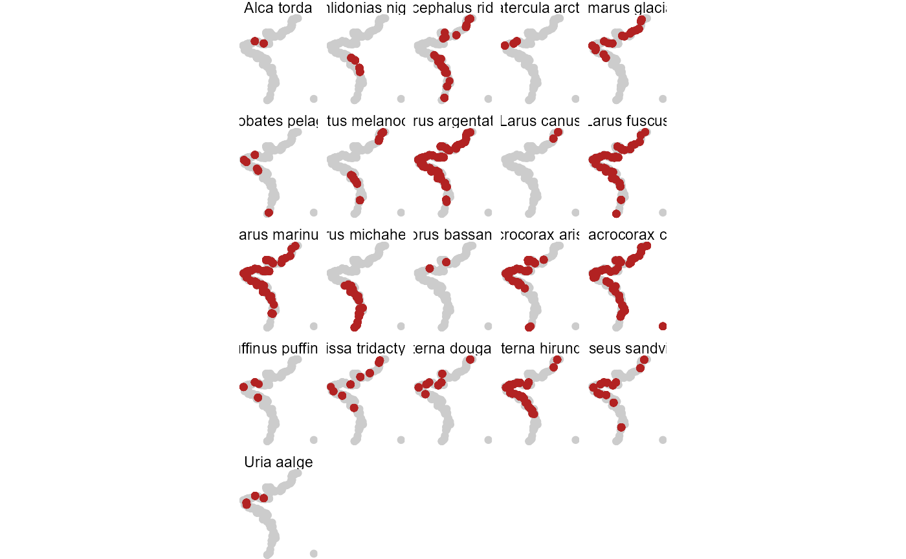
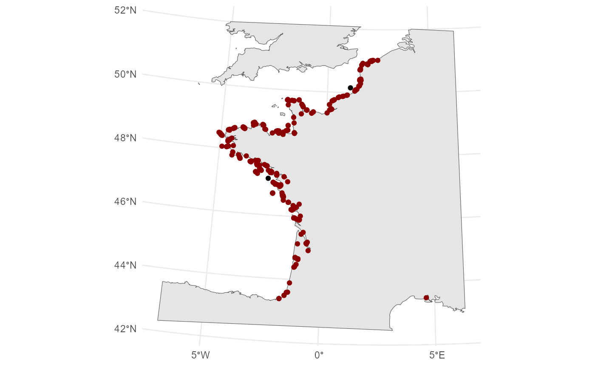
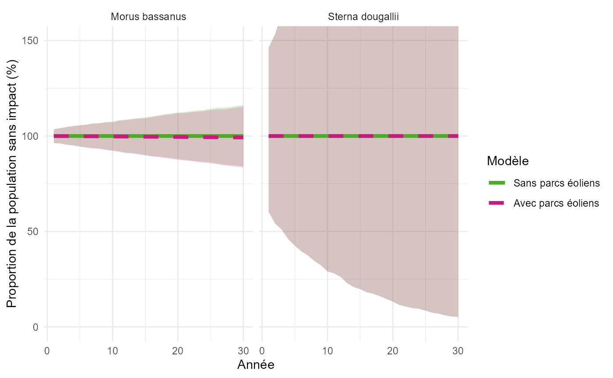
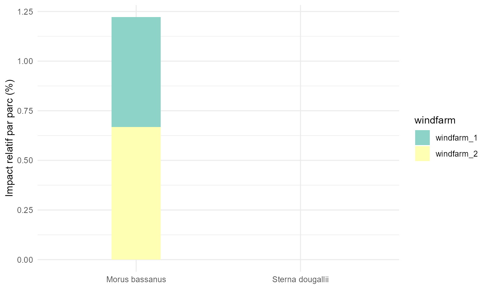

Vignette_Bird_Dynamic.RmdThe R package ‘BirdynamicPkg’ enables modelling the demographic impact of windfarms on seabird species following the methodology developed in the Bird Dynamic project. Check out the ‘Read me’ file to know more.
To run the analyses, you need to prepare data of seabird counts (TO DETAIL GISOM), location of windfarms (spatial data), mortality data from collision with windfarms (which you can calculate using the stochLAB package if you have seabird density estimates around the location of each windfarm, as detailed below). The other data (eg. species demographic parameters) are automatically loaded from the package data, but you can decide to edit them if you have better data or wish to add species that are not included in the package defaults.
The approach developped in Bird Dynamic was based on bird count data gathered and shared by the GISOM (Groupement d’Intérêt Scientifique Oiseaux Marins). This dataset includes breeding year counts of all marine bird species on Metropolitan French coasts. This dataset is the one used in the online Shiny App, but unfortunately cannot be shared directly in this R package as the GISOM shares it only for specific projects.
To run the analyses with this package, you then have three options:
bdydata_colonies_counts_low_res, including the columns:
“colony” with the name or code of the colony, “lat” and “lon” with the
spatial coordinates of the colony (in degrees as in WGS84), “seafront”
to specify if the colony is on Atlantic or Mediterranean coastline,
“species_latin” with the species name, “year” for the year of survey,
and “count” with the number of breeding pairs (specifically the number
of ‘Apparently Occupied Sites’).bdydata_colonies_counts_low_res, which includes the whole
GISOM dataset with a low geographic resolution (see more details in
help(bdydata_colonies_counts_low_res). We grouped colonies
and counts following the grouping procedure from
bdy_clustering()). This means that the coordinates included
in this dataset are those of the centroids of group of colonies, which
can be tens of kilometers away from the true coordinates of some
colonies. This may strongly impact the results as the distance between
colonies and windfarms can be very different from the distance between
group centroids and windfarms; it is therefore advised to use a complete
dataset, or the online Shiny App, to get more accurate results.In this example, we will use the low resolution data from
bdydata_colonies_counts_low_res as an example.
head(bdydata_colonies_counts_low_res)
#> colony lon lat seafront species_latin species_fr
#> 1 Group1 0.2401008 49.71605 atlantic Phalacrocorax aristotelis Cormoran huppé
#> 2 Group2 -1.9193631 49.69066 atlantic Phalacrocorax aristotelis Cormoran huppé
#> 3 Group3 -1.6164392 49.67155 atlantic Phalacrocorax aristotelis Cormoran huppé
#> 4 Group4 -1.1813567 49.52685 atlantic Phalacrocorax aristotelis Cormoran huppé
#> 5 Group5 -1.8824079 49.52821 atlantic Phalacrocorax aristotelis Cormoran huppé
#> 6 Group6 -0.9664131 49.39617 atlantic Phalacrocorax aristotelis Cormoran huppé
#> species_en year count
#> 1 European shag 2009 75
#> 2 European shag 2009 86
#> 3 European shag 2009 54
#> 4 European shag 2009 151
#> 5 European shag 2009 2
#> 6 European shag 2009 8You can then decide to add count data (from year that are not in this
table or colonies that are not in this table) using the function
bdy_add_counts and a dataframe that you loaded or created
with the information required (see help for more details). In this
example, I want to add a colony of Roseate Tern close to Cherbourg with
6 years of count (this is fake data, just for the example):
counts_to_add <- data.frame(
colony="Fake Cherbourg colony",
lon=-1.7115,
lat=49.6786,
seafront="atlantic",
species_latin="Sterna dougallii",
year=c(2015, 2016, 2017, 2018, 2020, 2021),
count=c(6, 8, 4, 8, 10, 13)
)
countData_completed <- bdy_add_counts(counts_to_add) %>% subset(., seafront=="atlantic")When the count data are ready and complete, we can then create the spatial data of colonies.
colonies_all <- bdy_summarise_colonies(countData_completed)
countData_completed$colony_code <- colonies_all$colony_code[match(countData_completed$colony, colonies_all$colony)]
ggplot(countData_completed)+
geom_sf(data=st_transform(colonies_all, st_crs(4326)), col="grey80")+
geom_point(aes(x=lon, y=lat), col="firebrick")+
facet_wrap(~ sub(" ", "\n", species_latin), ncol=7)+
theme_void()
To run the analyses, parameters of the species of interest have to be included in the following tables. For each of these tables, the default values that we use in the Bird Dynamic Shiny app are included in the package, but you can decide to edit them with different values or adding species.
The table vital_rates includes the survival and
reproduction parameters:
vital_rates <- bdydata_vital_rates
head(vital_rates)
#> species_fr species_latin class age survival fecundity propRepro
#> 1 Pingouin torda Alca torda Juv 0 0.630 0.000 0
#> 2 Pingouin torda Alca torda Imm 1 0.630 0.000 0
#> 3 Pingouin torda Alca torda Imm 2 0.630 0.000 0
#> 4 Pingouin torda Alca torda Imm 3 0.941 0.000 0
#> 5 Pingouin torda Alca torda Adu >3 0.927 0.543 1
#> 6 Guifette noire Chlidonias niger Juv 0 0.440 0.000 0The table foraging_ranges includes the foraging range of
each species:
foraging_ranges <- bdydata_foraging_ranges
head(foraging_ranges)
#> species_latin species_fr species_en max_km
#> 1 Hydrobates pelagicus Océanite tempête European storm petrel 336
#> 2 Fulmarus glacialis Fulmar boréal Northern Fulmar 2736
#> 3 Puffinus puffinus Puffin des Anglais Manx shearwater 2890
#> 4 Morus bassanus Fou de Bassan Northern Gannet 709
#> 5 Phalacrocorax aristotelis Cormoran huppé European shag 46
#> 6 Phalacrocorax carbo Grand cormoran Cormorant 35
#> mean_max_km sd_mean_max mean_km sd_mean category confidence
#> 1 336.0 NA NA NA Direct Poor
#> 2 542.3 657.9 134.6 90.1 Direct Good
#> 3 1346.8 1018.7 136.1 88.7 Direct Moderate
#> 4 315.2 194.2 120.4 50.0 Direct Highest
#> 5 13.2 10.5 9.2 4.9 Direct Highest
#> 6 25.6 8.3 7.1 3.8 Direct Moderate
#> terrestrial_habits
#> 1 FALSE
#> 2 FALSE
#> 3 FALSE
#> 4 FALSE
#> 5 FALSE
#> 6 TRUEThe table seasons includes the presence of each species
at each month (see help(bdydata_seasons) to see details on
attributes):
seasons <- bdydata_seasons
head(seasons)
#> species_latin species_fr species_en Jan Feb
#> 1 Morus bassanus Fou de Bassan Northern gannet M M
#> 2 Larus marinus Goéland marin Great black backed gull M M
#> 3 Rissa tridactyla Mouette tridactyle Black legged kittiwake M M
#> 4 Phalacrocorax aristotelis Cormoran huppé European shag R R
#> 5 Larus fuscus Goéland brun Lesser black backed gull V V
#> 6 Larus argentatus Goéland argenté Herring gull M M
#> Mar Apr May Jun Jul Aug Sep Oct Nov Dec
#> 1 T B B B B B B T M M
#> 2 T B B B B B R T M M
#> 3 T B B B B B T M M M
#> 4 B B B B B B B R R R
#> 5 T B B B B R T T V V
#> 6 T B B B B T T M M MMortality can be either calculated using the stochLAB
package or directly loaded if they were calculated previously.
To create them with the stoch_crm() function from the
stochLAB package, you must define the density of your
species for each windfarm and month, and all the windfarm and seabird
parameters. The values entered below are only for the example, do not
consider them as verified default values.
dens_dt <- data.frame(
row.names = month.name,
month=month.name,
mean=c(5,5,5,10,10,10,10,10,10,5,5,5),
sd=0
)
chord_profile <- data.frame(
pp_radius=seq(0, 1, by=0.05),
chord=c(0.69, 0.73, 0.79, 0.88, 0.96, 1, 0.98, 0.92, 0.85, 0.8, 0.75, 0.7, 0.64, 0.58, 0.52, 0.47, 0.41, 0.37, 0.3, 0.24, 0)
)
n_iterations <- 1000
morta_results <- stoch_crm(
model_options = "1",
n_iter = n_iterations,
flt_speed_pars = data.frame("mean"=0.1, "sd"=0),
body_lt_pars = data.frame("mean"=0.1, "sd"=0),
wing_span_pars = data.frame("mean"=0.1, "sd"=0),
avoid_bsc_pars = data.frame("mean"=0.99, "sd"=0),
avoid_ext_pars = NULL,
noct_act_pars = data.frame("mean"=0.2, "sd"=0),
prop_crh_pars = data.frame("mean"=0.5,"sd"=0),
bird_dens_opt = "tnorm",
bird_dens_dt = dens_dt,
flight_type = "flapping",
prop_upwind = 0.5,
n_blades = 3,
air_gap_pars = data.frame("mean"=30,"sd"=0),
rtr_radius_pars = data.frame("mean"=80, "sd"=0),
bld_width_pars = data.frame("mean"=5.5,"sd"=0),
bld_chord_prf = chord_profile,
rtn_pitch_opt = "probDist",
bld_pitch_pars = data.frame("mean"=2, "sd"=0.1),
rtn_speed_pars = data.frame("mean"=10, "sd"=0.5),
trb_wind_avbl = cbind(data.frame("month"=month.name),"pctg"=rep(95, 12)),
trb_downtime_pars = cbind(data.frame("month"=month.name), "mean"=rep(6, 12), "sd"=rep(2, 12)),
wf_n_trbs = 50,
wf_width = 5,
wf_latitude = 48.67,
tidal_offset = 2,
lrg_arr_corr = T,
out_format = "draws",
out_sampled_pars = FALSE,
out_period = "months",
season_specs = NULL,
verbose = TRUE,
log_file = NULL,
seed = NULL
)
morta_format <- data.frame("species_latin"="Larus fuscus",
"windfarm"="windfarm_1",
"month"=rep(1:12, n_iterations),
"iteration"=rep(1:n_iterations, each=12),
"coefficient"=as.vector(t(morta_results[["opt1"]]))
)
head(morta_format)
#> species_latin windfarm month iteration coefficient
#> 1 Larus fuscus windfarm_1 1 1 17.32526
#> 2 Larus fuscus windfarm_1 2 1 16.69770
#> 3 Larus fuscus windfarm_1 3 1 20.37485
#> 4 Larus fuscus windfarm_1 4 1 42.15468
#> 5 Larus fuscus windfarm_1 5 1 44.47484
#> 6 Larus fuscus windfarm_1 6 1 50.08019Alternatively, mortality data that were compiled previously can be
directly loaded, as long as they are formatted as in
bdydata_mortality_example (which we will use in this
vignette):
formatted_mortality <- bdydata_mortality_example
formatted_mortality$windfarm <- bdy_clean_names(formatted_mortality$windfarm)
head(formatted_mortality)
#> species_latin windfarm month iteration coefficient
#> 1 Morus bassanus windfarm_1 1 1 0.1308654
#> 2 Morus bassanus windfarm_1 2 1 0.1191316
#> 3 Morus bassanus windfarm_1 3 1 0.5197185
#> 4 Morus bassanus windfarm_1 4 1 0.9205076
#> 5 Morus bassanus windfarm_1 5 1 0.2392284
#> 6 Morus bassanus windfarm_1 6 1 0.4535329If your mortality data table is in French (as requested in the Shiny app), you can easily translate column names with:
Windfarm data must be provided to run the analyses, as a sf object
(see help(st_read) for more details) using either points or
polygons, projected in Lambert93 (EPSG:2154). As an example, we here use
the bdydata_windfarm_example data included in the package
and we apply the bdy_clean_names() function to the NAME
column (to remove spaces and capital and ensure it matches with names in
mortality data). They must include a column indicating the seafront (for
France, it can be ‘atlantic’ or ‘mediterranean’); this also has to be
added as a column to the colony file (and is already included in
bdydata_colonies_counts_low_res).
windfarms_L93 <- bdydata_windfarm_example %>% st_transform(., st_crs(2154))
windfarms_L93$NAME <- bdy_clean_names(windfarms_L93$NAME)
windfarms_L93$seafront <- "atlantic"
windfarms_L93
#> Simple feature collection with 2 features and 2 fields
#> Geometry type: POINT
#> Dimension: XY
#> Bounding box: xmin: 182940.1 ymin: 6688340 xmax: 276091.5 ymax: 6879756
#> Projected CRS: RGF93 v1 / Lambert-93
#> NAME geometry seafront
#> 1 windfarm_1 POINT (276091.5 6688340) atlantic
#> 2 windfarm_2 POINT (182940.1 6879756) atlantic
table(colonies_all$seafront)
#>
#> atlantic
#> 328If you don’t have a shapefile ready, you can also create the sf object from coordinates using the following function
windfarms_bis <- st_as_sf(data.frame(lon=c(3.214, 3.606, 5.026), lat=c(43.118, 43.283, 43.292), NAME=c("W1", "W2", "W3")), coords = c("lon","lat"), crs=st_crs(4326)) %>% st_transform(., st_crs(2154))A map of coastline is needed to create a cost matrix to calculate distance by sea, and to calculate the proportion of sea area around each colonies. We use data stored in the package and crop based on the location of colonies.
crop_extent <- colonies_all %>% st_bbox() %>% st_as_sfc() %>% st_buffer(., 100000) %>% st_transform(., 4326)
countryShape <- bdydata_world_map %>%
st_crop(., crop_extent) %>%
st_transform(., st_crs(colonies_all))
ggplot()+
geom_sf(data=countryShape)+
geom_sf(data=colonies_all, col="darkred")+
geom_sf(data=windfarms_L93, fill="black")+
theme_minimal()
Before running the analyses, we need to check that all required data
are loaded. This is done by the function
bdy_check_alldata() that will either return a message
saying all data are good, or an error.
bdy_check_alldata(windfarms_L93, colonies_all, formatted_mortality, countData_completed, vital_rates, seasons, foraging_ranges, countryShape)
#> [1] "All required datasets are loaded and valid"We calculate two types of distance: euclidian distance is used for
species that cross land (e.g., gulls), shortest sea path is used for
purely marine species (e.g., Northern Gannet). Both distances are
calculated for all colonies (if doShpa is set to TRUE) with the
bdy_get_distances() function, the type of distance to use
then depends on species later in the analysis. Before calculating
distances, a cost matrix based on coastline must be calculated with the
bdy_get_cost_raster().
cost_matrix <- bdy_get_cost_raster(colonies_all)
#> [1] "Starting seafront atlantic"
all_distances <- bdy_get_distances(colonies = colonies_all,
windfarms = windfarms_L93,
costMatrix = cost_matrix,
doShpa = T)
head(all_distances$eucl_dist)
#> Units: [km]
#> windfarm_1 windfarm_2
#> colo_001 353.3170 328.1362
#> colo_002 285.7878 183.4814
#> colo_003 288.5173 201.4817
#> colo_004 283.3023 223.8861
#> colo_005 268.5549 177.1197
#> colo_006 276.5099 234.4140
head(all_distances$shpa_dist)
#> Units: [km]
#> windfarm_1 windfarm_2
#> colo_001 681.3402 359.0071
#> colo_002 519.9554 197.6224
#> colo_003 546.9260 224.5929
#> colo_004 592.1686 269.8356
#> colo_005 513.4996 191.1665
#> colo_006 614.3818 292.0488The next steps of the analysis are applied species by species. In this vignette, we show a detailed example for one species, followed by how you can loop the analysis for multiple species.
For this example, we will select the Northern Gannett (Morus
bassanus) and process count data. The processing step includes an
important step, which is to cluster close colonies (reported in the
column group).
sp <- "Morus bassanus"
count_processed <- bdy_process_count_data(sp=sp,
countData=countData_completed,
colonies=colonies_all,
first_year = 2009,
last_year = 2021,
max_foraging_range_km =foraging_ranges$max_km[which(foraging_ranges$species_latin==sp)]
)The function bdy_process_count_data() calls
bdy_calculate_sea_area() to calculate the proportion of sea
area around each colony, which is used in the apportionning step to
account for the higher density of individuals at sea if the proportion
of sea area around a colony is low (as the species is not using the
terrestrial habitat).
head(count_processed$sea_area)
#> colo_021 colo_022
#> 0.9749742 0.9749742The first step to apply is the apportionning, where mortalities due to collisions with wind turbines (modelled or loaded earlier in the pipeline) are attributed to the different colonies depending on their distance to the windfarms or the configuration of the coastline.
We first set the distance between windfarms and colonies that include the selected species, keeping the shortest sea path if the species is purely marine, the euclidian distance otherwise.
if(foraging_ranges$terrestrial_habits[foraging_ranges$species_latin==sp]){
distances <- all_distances$eucl_dist
}else{
distances <- all_distances$shpa_dist
}
distances <- distances[rownames(distances) %in% count_processed$colonies_sp$colony_code,]We can now apply the [bdy_apportionning()] function to run the
apportionning calculations to set how mortality data should be
distributed among colonies. The output includes absolute and relative
weights at both colony and group of colonies scales. The value used to
split mortality data in bdy_process_mortality is the
relative weight of mortality between the windfarms for each group of
colonies (RW_group).
apportionning <- bdy_apportionning(max_foraging_range_km = foraging_ranges$max_km[which(foraging_ranges$species_latin==sp)],
colonies = count_processed$colonies_sp,
sea_area = count_processed$sea_area,
tbl_dist = distances
)
print(apportionning$RW_group)
#> windfarm_1 windfarm_2
#> 1 4.420705e-05 3.443430e-06
#> 2 9.999558e-01 9.999966e-01This table can then be used in the [bdy_process_mortality()] that distributes national mortality data among all colonies of a given species.
morta_iter_group <- bdy_process_mortality(
mortality = formatted_mortality,
season=seasons[which(seasons$species_latin==sp),][-1],
n_iteration = 1000,
RW_group = apportionning$RW_group
)In this step, we will create the demographic model that estimates species trends if there were no collisions with windfarms. Note that these trends are not expected to be very accurate on their own as the demographic models are quite simple, they are only meant to be used in comparison with the model with collisions.
no_impact_output <- bdy_model_no_impact(group_counts = count_processed$group_counts_sp,
ppa = count_processed$ppa_yr_sp,
survival = vital_rates[vital_rates$species_latin == sp, "survival"],
fecundity = vital_rates[vital_rates$species_latin == sp, "fecundity"],
propRepro = vital_rates[vital_rates$species_latin == sp, "propRepro"],
modelFile="C:/Users/TERRA/Documents/Projects/Birdynamic/app/0.Data/model_01.txt",
nimble=T)
#> Warning: R object of different size than NimArrDouble. R obj has size 1 but NimArrDbl has size 43.
#> warning: logProb of data node y[1, 6]: logProb less than -1e12.
#> warning: logProb of data node y[2, 6]: logProb less than -1e12.
#> warning: logProb of data node y[1, 7]: logProb less than -1e12.
#> warning: logProb of data node y[2, 7]: logProb less than -1e12.
#> warning: logProb of data node y[1, 8]: logProb less than -1e12.
#> warning: logProb of data node y[2, 8]: logProb less than -1e12.
#> warning: logProb of data node y[1, 12]: logProb less than -1e12.
#> warning: logProb of data node y[2, 12]: logProb less than -1e12.
#> warning: logProb of data node y[1, 13]: logProb less than -1e12.
#> warning: logProb of data node y[2, 13]: logProb less than -1e12.
#> |-------------|-------------|-------------|-------------|
#> |-------------------------------------------------------|
#> Warning: R object of different size than NimArrDouble. R obj has size 1 but NimArrDbl has size 43.
#> |-------------|-------------|-------------|-------------|
#> |-------------------------------------------------------|
#> Warning: R object of different size than NimArrDouble. R obj has size 1 but NimArrDbl has size 43.
#> |-------------|-------------|-------------|-------------|
#> |-------------------------------------------------------|The output includes initial population counts and a growth parameter for each group of colonies and iterations.
We will now create the model with impact from collisions with windfarms by applying the mortalities processed in the apportionning step to the demographic trends estimated with the model with no impact.
with_impact_output <- bdy_model_with_impact(n_group=nlevels(count_processed$colonies_sp$group),
ny_data=ncol(count_processed$group_counts_sp),
posterior=no_impact_output,
mortality=morta_iter_group
)
with_impact_output$sc1[,,1]
#> [,1] [,2] [,3] [,4] [,5] [,6] [,7] [,8] [,9] [,10] [,11] [,12]
#> [1,] 66 68 67 76 68 69 76 79 88 75 69 62
#> [2,] 52184 51994 51709 51371 50821 50568 50103 49614 49323 49722 49579 49437
#> [,13] [,14] [,15] [,16] [,17] [,18] [,19] [,20] [,21] [,22] [,23] [,24]
#> [1,] 46 61 58 60 63 50 46 47 49 57 63 66
#> [2,] 49121 48820 48293 47733 47207 46669 46663 46688 46475 46476 46097 45447
#> [,25] [,26] [,27] [,28] [,29] [,30]
#> [1,] 69 67 62 67 68 66
#> [2,] 45067 44745 44489 43981 43744 43474The output includes two lists: sc0 (which includes the counts with no impact from windfarms) and sc1 (counts with impact from windfarms). Each of these lists includes 1000 tables (if the number of iterations was set to 1000), with count estimates for the 30 years of projected demography (as columns) and each group of colonies (as rows).
Results can be compiled from the previous outputs using the function
bdy_raw_res_tables(), which will create 3 result tables,
that will be used in all the functions used to display results.
Model_output <- list(
SP = list(
no_impact=with_impact_output$sc0,
with_impact=with_impact_output$sc1,
colonies=count_processed$colonies_sp,
mortality=morta_iter_group,
distance=round(distances)
)
)
names(Model_output)[1] <- sp
result_table <- bdy_raw_res_tables(mod_out=Model_output)First, the table Simulated_National includes estimated
counts per year and per iteration with or without impact. It is used to
plot and compare future trends.
result_table$Simulated_National
#> # A tibble: 30,000 × 6
#> # Groups: Species, Year, Iteration [30,000]
#> Species Year Iteration Sum_PopInit Sum_noimpact Sum_withimpact
#> <chr> <int> <int> <dbl> <dbl> <dbl>
#> 1 Morus bassanus 1 1 52250 52250 52250
#> 2 Morus bassanus 1 2 52092 52092 52092
#> 3 Morus bassanus 1 3 50221 50221 50221
#> 4 Morus bassanus 1 4 52416 52416 52416
#> 5 Morus bassanus 1 5 50412 50412 50412
#> 6 Morus bassanus 1 6 51471 51471 51471
#> 7 Morus bassanus 1 7 51959 51959 51959
#> 8 Morus bassanus 1 8 53104 53104 53104
#> 9 Morus bassanus 1 9 51668 51668 51668
#> 10 Morus bassanus 1 10 51138 51138 51138
#> # ℹ 29,990 more rowsSecond, the table Tableau_National includes the relative
impact and the increase in probability of extinction for each species at
national level. Relative impact was calculated for each iteration as
100*(C0-C1)/C0where C0 is the estimated
abundance of the species after 30 years without
windfarm impact and C1 is the estimated abundance of the
species after 30 years with windfarm impact (the median
across simulations is provided, as well as the confidence interval).
Increase in extinction probability is calculated as
100*(P1-P0) where P0 is the probability of extinction
without windfarm impact (calculated as the proportion
of simulations that reach counts of 0 after 30 years) and P1 is the
probability of extinction with windfarm impact.
as.data.frame(result_table$Tableau_National)
#> Species Pop_Init_med Pop_Init_2.5 Pop_Init_97.5 Mortality_med
#> 1 Morus bassanus 51670 49850 53519 12.70028
#> Mortality_2.5 Mortality_95 Mortality_97.5 RelImpact_med RelImpact_2.5
#> 1 6.922283 20.35946 22.6581 0.7126498 0.378762
#> RelImpact_95 RelImpact_97.5 Ext_Noimpact Ext_Withimpact Ext_Relative
#> 1 1.126249 1.250186 0 0 0Third, the table Tableau_Subpop includes the same
results as Tableau_National but for each group of
colonies.
as.data.frame(result_table$Tableau_Subpop)
#> Species GrColo Pop_Init_med Pop_Init_2.5 Pop_Init_97.5 Trend_no_med
#> 1 Morus bassanus 1 338 43 985 -0.2817190
#> 2 Morus bassanus 2 51279 49501 53020 -0.1962269
#> Trend_no_2.5 Trend_no_97.5 Trend_impact_med Trend_impact_2.5
#> 1 -0.8462121 0.3867979 -0.2817190 -0.8462121
#> 2 -0.2955131 -0.0912394 -0.2015278 -0.3017717
#> Trend_impact_97.5 Mortality_med Mortality_2.5 Mortality_95 Mortality_97.5
#> 1 0.38679789 2.890426e-04 0.0001493365 0.000536409 5.776962e-04
#> 2 -0.09798641 1.270000e+01 6.9221297617 20.359262277 2.265785e+01
#> Parc_proche RelImpact_med RelImpact_2.5 RelImpact_95 RelImpact_97.5
#> 1 windfarm_2 (275km) 0.0000000 0.0000000 0.000000 0.000000
#> 2 windfarm_2 (47km) 0.7170411 0.3797152 1.130328 1.256302
#> Ext_Noimpact Ext_Withimpact Ext_Relative
#> 1 0.006 0.006 0
#> 2 0.000 0.000 0The same analysis can be run using the grouped function
bdy_run_analysis, which includes the steps described in the
previous section, and allowing running the analysis for multiple
species.
#> [1] "Prepare data"
#> [1] "Starting seafront atlantic"
#> [1] "Start analysis Morus bassanus\n"
#> Warning: R object of different size than NimArrDouble. R obj has size 1 but NimArrDbl has size 43.
#> |-------------|-------------|-------------|-------------|
#> |-------------------------------------------------------|
#> Warning: R object of different size than NimArrDouble. R obj has size 1 but NimArrDbl has size 43.
#> |-------------|-------------|-------------|-------------|
#> |-------------------------------------------------------|
#> Warning: R object of different size than NimArrDouble. R obj has size 1 but NimArrDbl has size 43.
#> |-------------|-------------|-------------|-------------|
#> |-------------------------------------------------------|
#> [1] "Start analysis Sterna dougallii\n"
#> Warning: R object of different size than NimArrDouble. R obj has size 1 but NimArrDbl has size 43.
#> |-------------|-------------|-------------|-------------|
#> |-------------------------------------------------------|
#> Warning: R object of different size than NimArrDouble. R obj has size 1 but NimArrDbl has size 43.
#> |-------------|-------------|-------------|-------------|
#> |-------------------------------------------------------|
#> Warning: R object of different size than NimArrDouble. R obj has size 1 but NimArrDbl has size 43.
#> |-------------|-------------|-------------|-------------|
#> |-------------------------------------------------------|Whether models were run using the individual functions or the grouped function, the package includes functions to display the different results, following the outputs displayed in the Bird Dynamic Shiny app.
First, you can create a pretty table including all the main results at national scale or at the scale of group of colonies:
bdy_pretty_result_table(result_table, type="national")
#> # A tibble: 2 × 7
#> # Groups: Espece [2]
#> Espece Population_initiale Nombre_collisions Impact_Relatif
#> <chr> <chr> <chr> <chr>
#> 1 Morus bassanus 51655 [49740-53471] 12.97 [6.96-23.98] 1.26% [0.39-0.73-1.37]
#> 2 Sterna dougallii 268 [163-396] 0 [0-0] 0% [0-0-0]
#> # ℹ 3 more variables: Augmentation_Extinction <chr>, MAX_Impact_relatif <chr>,
#> # MAX_Augmentation_extinction <dbl>
bdy_pretty_result_table(result_table, type="subpop")
#> # A tibble: 10 × 7
#> # Groups: Espece, Groupe_colonies [10]
#> Espece Groupe_colonies Parc_proche Population_initiale Nombre_collisions
#> <chr> <int> <chr> <chr> <chr>
#> 1 Morus bass… 1 windfarm_2… 328 [35-1020] 0 [0-0]
#> 2 Morus bass… 2 windfarm_2… 51264 [49497-52999] 12.97 [6.96-23.9…
#> 3 Sterna dou… 1 windfarm_2… 12 [1-40] 0 [0-0]
#> 4 Sterna dou… 2 windfarm_2… 37 [8-74] 0 [0-0]
#> 5 Sterna dou… 3 windfarm_2… 20 [3-61] 0 [0-0]
#> 6 Sterna dou… 4 windfarm_2… 20 [3-51] 0 [0-0]
#> 7 Sterna dou… 5 windfarm_2… 17 [7-43] 0 [0-0]
#> 8 Sterna dou… 6 windfarm_2… 36 [11-66] 0 [0-0]
#> 9 Sterna dou… 7 windfarm_2… 13 [2-44] 0 [0-0]
#> 10 Sterna dou… 8 windfarm_2… 102 [50-153] 0 [0-0]
#> # ℹ 2 more variables: Impact_Relatif <chr>, Augmentation_Extinction <chr>Second, you can see relative trends with and without impact:
bdy_plot_trends(result_table)
Third, you can obtain an interactive map summarising the results:
leafmap <- bdy_plot_map(mod_outputs, result_table, windfarms_L93)
leafmapFourth, you can obtain a plot summarising the effect of each windfarm:
bdy_plot_windfarm_impact(result_table, formatted_mortality)